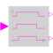
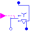
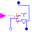
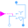

LogicalDelayDelay boolean signal |

|
Information
This information is part of the Modelica Standard Library maintained by the Modelica Association.
When input u gets true, output y1 gets immediately true, whereas output y2 gets true after delayTime.
When input u gets false, output y1 gets false after delayTime, whereas output y2 gets immediately false.
Parameters (1)
| delayTime |
Value: 0 Type: Time (s) Description: Time delay |
|---|
Connectors (3)
| u |
Type: BooleanInput |
|
|---|---|---|
| y1 |
Type: BooleanOutput |
|
| y2 |
Type: BooleanOutput |
Used in Components (3)
|  |
Modelica.Electrical.Machines.Utilities Y-D-switch |
|  |
Modelica.Electrical.Machines.Utilities Y-D-switch with arc |
|  |
Modelica.Magnetic.QuasiStatic.FundamentalWave.Utilities Y-D-switch |